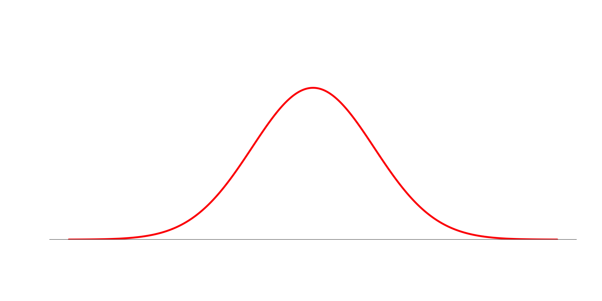
Continuous distributions
Dwija Kakkad
Duke University
STA 240 Fall 2026
Today
Two new families of continuous random variables:
- Normal: the famous bell curve. It can take values anywhere on the real line;
- Gamma: a flexible family for positive quantities (eg. waiting times) that generalizes the exponential distribution.
Today we just enumerate basic facts. Derivations come later. We also continue to practice that basic skill:
event in words \(\to\) probability statement \(\to\) formula involving CDF \(\to\)
Rcommands
Part 1: The normal distribution
Meet the bell curve
Meet the bell curve
A random variable \(X\) has a normal (or Gaussian) distribution if its PDF is
\[ f(x)=\frac{1}{\sqrt{2\pi\sigma^2}}\exp\!\left(-\frac{1}{2}\frac{(x-\mu)^2}{\sigma^2}\right),\qquad -\infty<x<\infty. \]
We denote this \(X\sim\text{N}(\mu,\sigma^2)\). This is a parametric family where each distinct combination of parameters \((\mu,\, \sigma^2)\) gives you a different distribution with different behavior:
- \(\text{Range}(X)=\mathbb{R}=(-\infty,\,\infty)\);
- \(E(X)=\text{median}(X)=\mu\in\mathbb{R}\): the center and axis of symmetry;
- \(\operatorname{var}(X)=\sigma^2>0\) and \(\operatorname{sd}(X)=\sigma\);
- The distribution is symmetric (zero skew) with light, well-behaved tails.
Normal PDF = constant \(\times\) kernel
As with every PMF or PDF, separate the formula into two pieces:
\[ f(x)=\underbrace{\frac{1}{\sqrt{2\pi\sigma^2}}}_{\text{normalizing constant}} \;\times\; \underbrace{\exp\!\left(-\frac{1}{2}\frac{(x-\mu)^2}{\sigma^2}\right)}_{\text{kernel}}. \]
- The kernel determines the shape of the curve and the relative likelihoods of different regions of the number line;
- The normalizing constant doesn’t depend on \(x\). It just rescales the kernel the total area is 1.
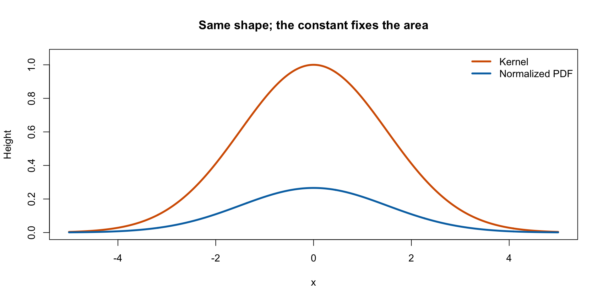
Free integral identity!
Because PDFs must integrate to 1, the formula for the bell curve implies a free integral identity:
\[ \int_{-\infty}^\infty \exp\!\left(-\frac{1}{2}\frac{(x-\mu)^2}{\sigma^2}\right) \,\text{d}x=\sqrt{2\pi\sigma^2}. \]
It’s true for any \(\mu\in\mathbb{R}\) and \(\sigma>0\). If you are prepared to recognize this, it can simplify future calculations tremendously!
What does \(\mu\) do?
You can show that \(\mu\) is the location of the peak (the maximizer). Changing \(\mu\) slides the bell curve horizontally without changing its shape.
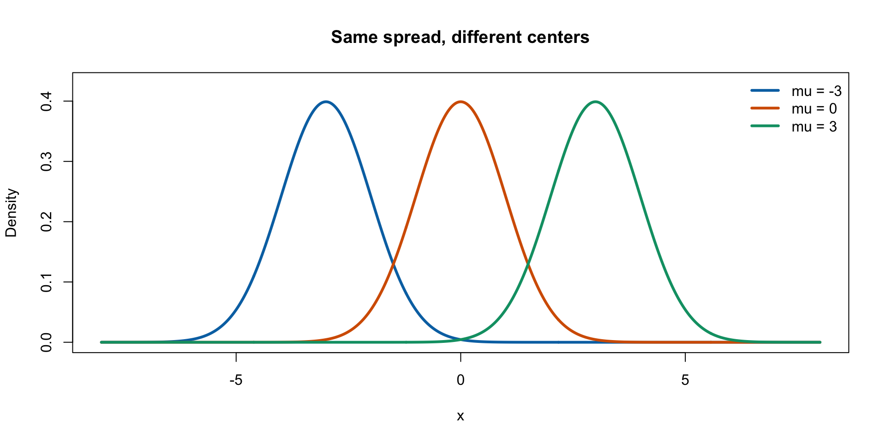
What does \(\sigma\) do?
You showed on Problem Set 0 that \(\sigma\) is the distance between the peak and the inflection points:
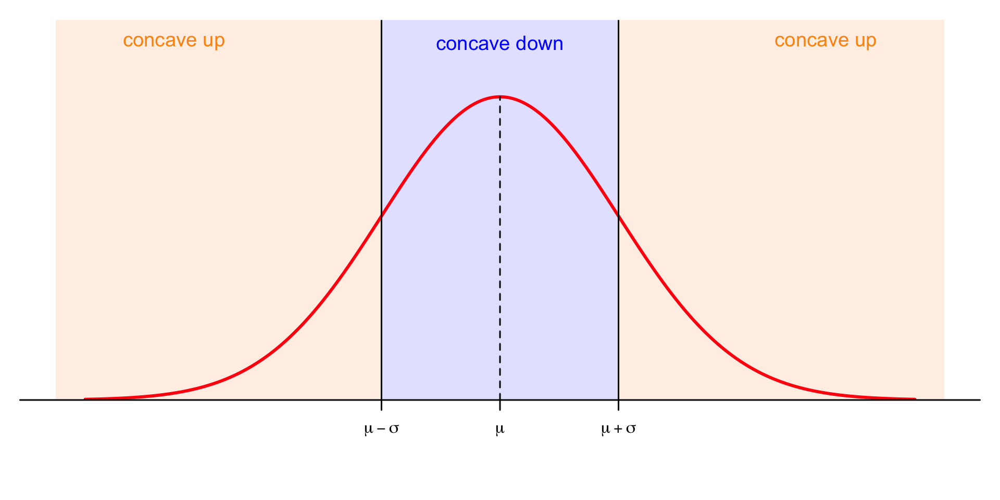
What does \(\sigma\) do?
Changing \(\sigma\) changes the spread. A smaller standard deviation means a narrower, taller bell curve. Changing the spread must simultaneously alter the height because total area 1 must be preserved at all times.
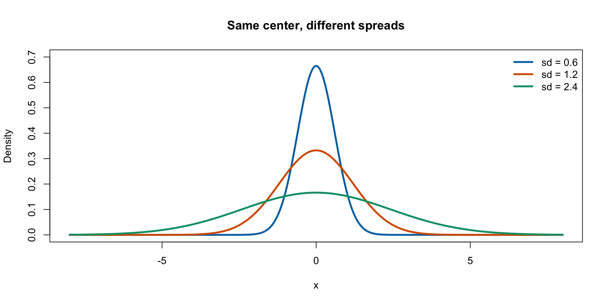
Watch out
\(\text{N}(10, 4)\) has standard deviation 2, not 4.
The 68–95–99.7 rule
Approximately:
- 68% of the probability lies within one standard deviation of the mean;
- 95% lies within two;
- 99.7% lies within three.
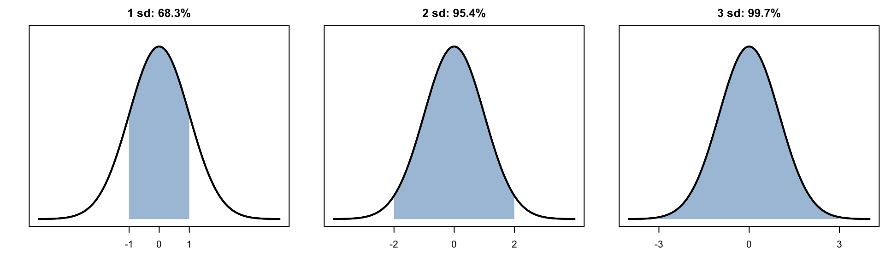
Haven’t we seen this shape before?
The normal distribution plays a central role in probability 😉:

Haven’t we seen this shape before?
The normal distribution plays a central role in probability 😉:
#| '!! shinylive warning !!': |
#| shinylive does not work in self-contained HTML documents.
#| Please set `embed-resources: false` in your metadata.
#| standalone: true
#| viewerHeight: 500
library(shiny)
discrete_pmf <- function(x, p, xlim = c(min(x) - 1, max(x) + 1), label = "", add_mean = FALSE){
plot(x, p,
pch = 19,
cex = 1,
xlab = "",
ylab = "",
main = "",
ylim = c(0, 1.05 * max(p)),
yaxs = "i",
yaxt = "n",
xlim = xlim,
xaxt = "n",
bty = "n"
)
segments(x,
rep(0, length(x) + 1),
x1 = x,
y1 = p,
lwd = 3
)
axis(1, at = floor(xlim[1]):ceiling(xlim[2]), cex.axis = 1)
axis(2, at = seq(0, 1, length.out = 11), las = 1, cex.axis = 1.5)
legend("topright", label, bty = "n", cex = 3)
if(add_mean == TRUE){
mtext("E(X)", side = 1, at = sum(x * p), col = "red", line = 2)
}
}
discrete_cdf <- function(x, p, xlim = c(min(x) - 1, max(x) + 1), label = ""){
closeddot = cumsum(p)
opencircle = c(0, closeddot[1:length(x)-1])
plot(x, closeddot, pch = 19, cex = 1,
ylim = c(0, 1),
ylab = "", main = "", xlab = "",
yaxt = "n",
xlim = xlim,
xaxt = "n",
#yaxs = "i",
bty = "n")
points(x, opencircle, cex = 1)
segments(c(xlim[1], x), c(0, closeddot), c(x, xlim[2]), c(0, closeddot), lwd = 1)
axis(1, at = floor(xlim[1]):ceiling(xlim[2]), cex.axis = 1)
axis(2, at = seq(0, 1, length.out = 11), las = 1, cex.axis = 1.5)
legend("bottomright", label, bty = "n", cex = 3)
}
# Define UI for application that draws a histogram
ui <- fluidPage(
# Application title
titlePanel("Binomial distribution PMF"),
# Sidebar with a slider input for number of bins
sidebarLayout(
sidebarPanel(
sliderInput("p",
"Probability of success (p):",
min = 0,
max = 1,
value = 0.5,
step = 0.01),
sliderInput("n",
"Number of trials (n):",
min = 1,
max = 100,
value = 5,
step = 1)
),
# Show a plot of the generated distribution
mainPanel(
plotOutput("distPlot")
)
)
)
# Define server logic required to draw a histogram
server <- function(input, output) {
output$distPlot <- renderPlot({
p <- input$p
n <- input$n
#par(mfrow = c(2, 1), mar = c(4, 4, 2, 2))
#discrete_cdf(0:n, dbinom(0:n, n, p))
discrete_pmf(0:n, dbinom(0:n, n, p), add_mean = TRUE)
})
}
# Run the application
shinyApp(ui = ui, server = server)Haven’t we seen this shape before?
The normal distribution plays a central role in probability 😉:
#| '!! shinylive warning !!': |
#| shinylive does not work in self-contained HTML documents.
#| Please set `embed-resources: false` in your metadata.
#| standalone: true
#| viewerHeight: 500
library(shiny)
discrete_pmf <- function(x, p, xlim = c(min(x) - 1, max(x) + 1), label = "", add_mean = FALSE){
plot(x, p,
pch = 19,
cex = 0.5,
xlab = "",
ylab = "",
main = "",
ylim = c(0, 0.4),
yaxs = "i",
yaxt = "n",
xlim = xlim,
xaxt = "n",
bty = "n"
)
segments(x,
rep(0, length(x) + 1),
x1 = x,
y1 = p,
lwd = 3
)
axis(1, at = floor(xlim[1]):ceiling(xlim[2]), cex.axis = 1)
axis(2, at = seq(0, 1, length.out = 11), las = 1, cex.axis = 1.5)
legend("topright", label, bty = "n", cex = 3)
if(add_mean == TRUE){
mtext("E(X)", side = 1, at = sum(x * p), col = "red", line = 2)
}
}
discrete_cdf <- function(x, p, xlim = c(min(x) - 1, max(x) + 1), label = ""){
closeddot = cumsum(p)
opencircle = c(0, closeddot[1:length(x)-1])
plot(x, closeddot, pch = 19, cex = 0.5,
ylim = c(0, 1),
ylab = "", main = "", xlab = "",
yaxt = "n",
xlim = xlim,
xaxt = "n",
#yaxs = "i",
bty = "n")
points(x, opencircle, cex = 0.5)
segments(c(xlim[1], x), c(0, closeddot), c(x, xlim[2]), c(0, closeddot), lwd = 1)
axis(1, at = floor(xlim[1]):ceiling(xlim[2]), cex.axis = 1)
axis(2, at = seq(0, 1, length.out = 11), las = 1, cex.axis = 1.5)
legend("bottomright", label, bty = "n", cex = 3)
}
# Define UI for application that draws a histogram
ui <- fluidPage(
# Application title
titlePanel("Poisson distribution PMF"),
# Sidebar with a slider input for number of bins
sidebarLayout(
sidebarPanel(
sliderInput("lambda",
"Rate (λ):",
min = 0,
max = 100,
value = 1,
step = 0.1)
),
# Show a plot of the generated distribution
mainPanel(
plotOutput("distPlot")
)
)
)
# Define server logic required to draw a histogram
server <- function(input, output) {
output$distPlot <- renderPlot({
lambda <- input$lambda
n <- 100
#par(mfrow = c(2, 1), mar = c(4, 4, 2, 2))
#discrete_cdf(0:n, dpois(0:n, lambda))
discrete_pmf(0:n, dpois(0:n, lambda), add_mean = FALSE)
mtext("E(X)", side = 1, at = lambda, col = "red", line = 2)
})
}
# Run the application
shinyApp(ui = ui, server = server)The standard normal and its CDF
The special case \(Z\sim\text{N}(0,1)\) is the standard normal.
Its CDF is traditionally denoted by \(\Phi\):
\[ \Phi(z)=P(Z\le z)=\int_{-\infty}^{z}\frac{1}{\sqrt{2\pi}}e^{-t^2/2}\,dt. \]
Unlike the uniform or exponential CDF, this integral cannot be expressed using elementary functions. But computers evaluate it to high precision.
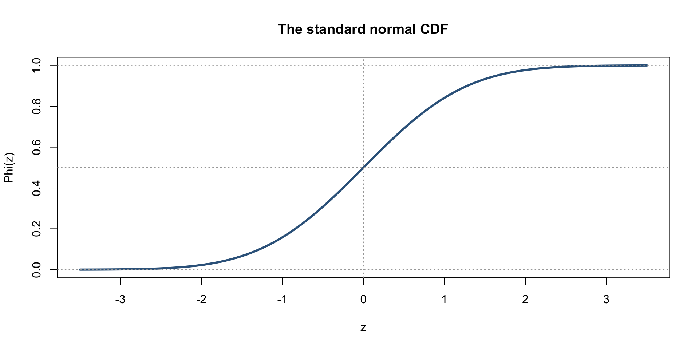
Probabilities are areas, not heights
For \(X\sim\text{N}(70, 10^2)\), picture \(P(60<X<85)\).
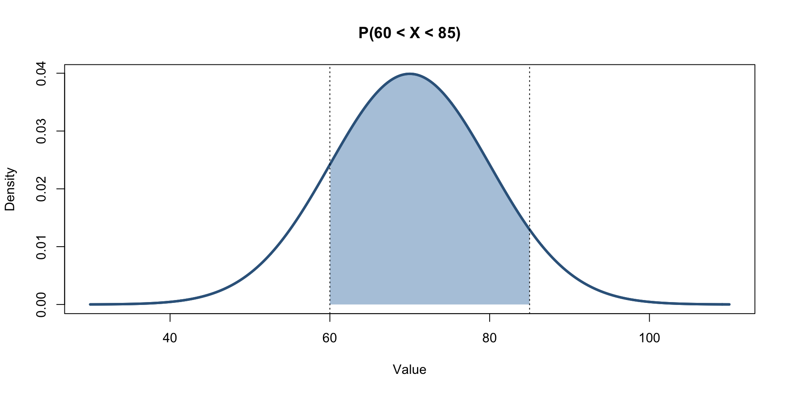
\[P(60<X<85)=F(85)-F(60).\]
Because \(X\) is continuous, \(P(X=60)=0\): including or excluding endpoints makes no difference.
R’s familiar pdqr family
| Task | Normal distribution |
|---|---|
| PDF height at \(x\) | dnorm(x, mean, sd) |
| CDF \(P(X\le x)\) | pnorm(x, mean, sd) |
| Quantile (probability \(p\)) | qnorm(p, mean, sd) |
| Generate \(n\) observations | rnorm(n, mean, sd) |
R takes the standard deviation, not the variance.
Exercise: simulation versus theory
The primary goal of these labs is to run simulations and verify that they agree with what the theory says. To get a taste for that, do the following:
- Generate and store 1000 draws from N(5.6, 22);
- Plot a histogram of these;
- Add on top of your histogram a line tracing the density of N(5.6, 22).
If you did everything correctly, the histogram and density should match.
Solution
Notes about that
- set a seed so the random numbers are reproducible;
- Never forget that the pdqr functions for the normal take the standard deviation;
- if
freq = TRUEthe histogram bars are counts. iffreq = FALSE, the bar heights are normalized so that the total area under the histogram is 1, which is the correct scale to compare with a density; - We do
breaks = "Scott"because David Scott was one of JZ’s professors in grad school, so we honor him.
Exercises: the class’s new grading machine
A malfunctioning grading machine produces scores that are approximately normal, with mean 75 and standard deviation 12. (For the purpose of this exercise, pretend scores can exceed 100.)
Let \(X\sim\text{N}(75,12^2)\).
Compute in R:
- \(P(X<60)\): a decidedly unhappy student.
- \(P(X\ge90)\): a very happy student.
- \(P(70<X<85)\): comfortably in the middle.
- The score at the 90th percentile.
Try these before looking at the next slide.
Grading machine: solutions
[1] 0.1056498[1] 0.1056498[1] 0.4592105[1] 90.37862Question: How could the machine produce scores over 100? Is a normal model always sensible for bounded quantities?
Exercises: airport security’s suspiciously precise clock
According to an airline’s optimistic brochure, the time \(T\) (minutes) spent in a security line follows
\[T\sim\text{N}(24,6^2).\]
- What is the probability of clearing security in under 15 minutes?
- What is the probability of waiting between 20 and 30 minutes?
- The airline claims that 95% of passengers wait less than \(t\) minutes. Find \(t\).
- Generate 10,000 hypothetical waiting times and approximate the answer to (1) by simulation.
- How many simulated waiting times are negative? What does that tell you about this model?
The distribution is chosen for computing practice, not because airport queues really are Gaussian.
Airport: a visual hint
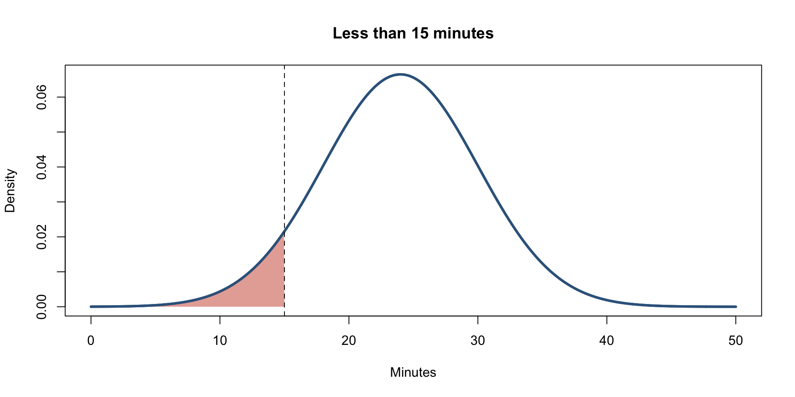
Airport: solutions
Part 2: The gamma distribution
First, remember the exponential
The exponential distribution models positive quantities, often waiting times.
\[X\sim\operatorname{Exp}(\beta),\qquad f_X(x)=\beta e^{-\beta x},\quad x>0.\]
- \(\beta>0\) is the rate.
- \(E(X)=1/\beta\).
- Its density decreases from its maximum at zero.

The gamma family will give us many more shapes, while retaining positive support.
Second, recall from Problem Set 0
The gamma function is this silly thing:
\[\Gamma(a)=\int_0^\infty t^{a-1}e^{-t}\,dt,\qquad a>0.\]
Using integration by parts, you showed that \(\Gamma(a + 1)=a\Gamma(a)\), so for positive integers, \(\Gamma(n)=(n-1)!\):
Third, meet the gamma distribution
A random variable has the gamma distribution if
\[ f(x)=\frac{\beta^\alpha}{\Gamma(\alpha)}x^{\alpha-1}e^{-\beta x},\qquad x>0. \]
We write \(X\sim\operatorname{Gamma}(\alpha,\,\beta)\).
- \(\text{Range}(X)=[0,\,\infty)\);
- \(\alpha>0\) is the shape parameter;
- \(\beta>0\) is the rate parameter;
- \(E(X)=\alpha/\beta\), \(\operatorname{Var}(X)=\alpha/\beta^2\) (derivations later).
Gamma PDF = constant \(\times\) kernel
Here is that same structure again:
\[ f(x)=\underbrace{\frac{\beta^\alpha}{\Gamma(\alpha)}}_{\text{normalizing constant}} \;\times\; \underbrace{x^{\alpha-1}e^{-\beta x}}_{\text{kernel}}, \qquad x>0. \]
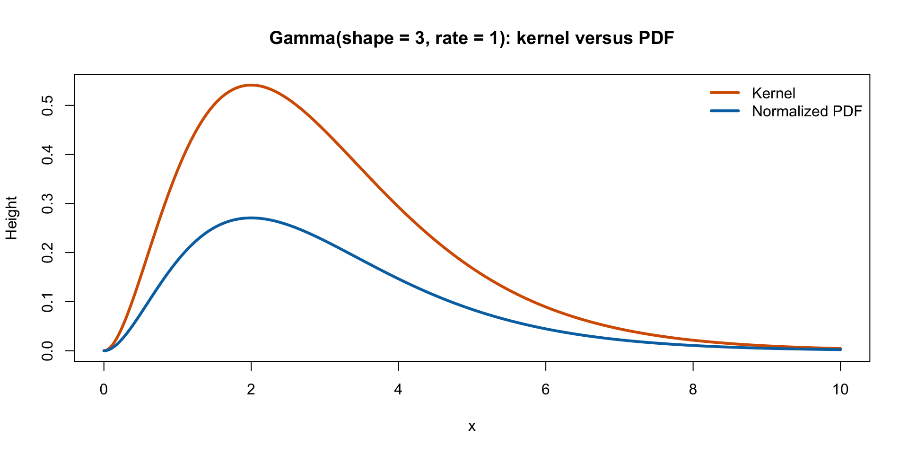
Free integral identity!
Beause PDFs must integrate to 1, the gamma density gives us a new integral identity for free:
\[ \int_0^\infty x^{\alpha-1}e^{-\beta x} \text{d}x = \frac{\Gamma(\alpha)}{\beta^\alpha}. \]
Be prepared to use this to simplify your life!
Exponential is gamma in disguise
When \(\alpha=1\), \(\Gamma(1)=1\), and so:
\[\frac{\beta^1}{\Gamma(1)}x^{1-1}e^{-\beta x}=\beta e^{-\beta x}.\]
Therefore \(\operatorname{Gamma}(1,\beta)=\operatorname{Exp}(\beta)\).
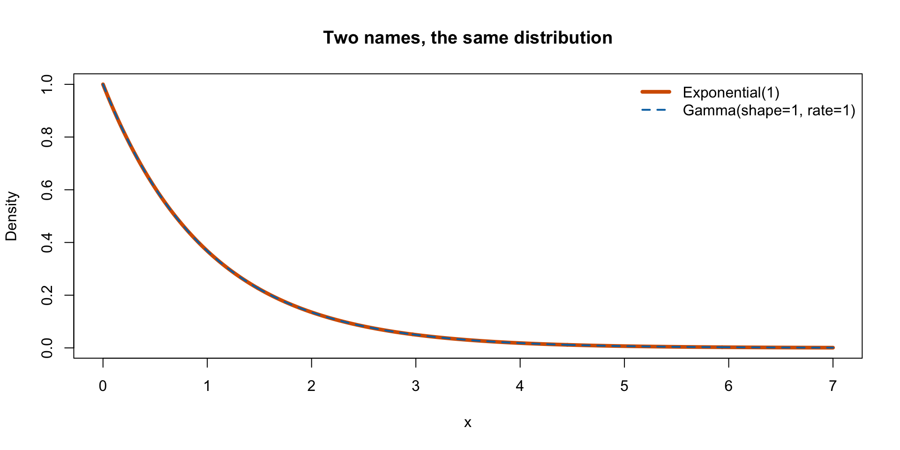
How do the parameters control the shape?
- Keep the rate \(\beta=1\) fixed and change shape;
- Keep the shape \(\alpha=3\) fixed and change rate.
#| '!! shinylive warning !!': |
#| shinylive does not work in self-contained HTML documents.
#| Please set `embed-resources: false` in your metadata.
#| standalone: true
#| viewerHeight: 500
library(shiny)
ui <- fluidPage(
titlePanel("Gamma distribution PDF"),
sidebarLayout(
sidebarPanel(
sliderInput("alpha", "Shape (α):",
min = 0.5, max = 20, value = 2, step = 0.1),
sliderInput("beta", "Rate (β):",
min = 0.2, max = 10, value = 0.5, step = 0.05),
hr(),
verbatimTextOutput("moments")
),
mainPanel(
plotOutput("gammaPlot", height = "400px")
)
)
)
server <- function(input, output) {
output$moments <- renderText({
alpha <- input$alpha
beta <- input$beta
mu <- alpha / beta
sd <- sqrt(alpha) / beta
paste0("E(X) = ", round(mu, 3),
"\nsd(X) = ", round(sd, 3))
})
output$gammaPlot <- renderPlot({
alpha <- input$alpha
beta <- input$beta
# Fixed plotting range
x_min <- -2
x_max <- 25
x <- seq(x_min, x_max, length.out = 2000)
# PDF and CDF
pdf_vals <- ifelse(x >= 0, dgamma(x, shape = alpha, rate = beta), 0)
cdf_vals <- ifelse(x >= 0, pgamma(x, shape = alpha, rate = beta), 0)
mu <- alpha / beta
# Fixed y-limits
pdf_ylim <- c(0, 0.8)
cdf_ylim <- c(0, 1)
# --- PDF ---
plot(x, pdf_vals, type = "l", lwd = 2, col = "darkred",
xlim = c(x_min, x_max), ylim = pdf_ylim,
main = "Probability Density Function (PDF)",
xlab = "x", ylab = "f(x)")
#abline(v = mu, col = "gray60", lty = 3)
# Label E(X) with mtext along x-axis
if (mu >= x_min && mu <= x_max) {
mtext("E(X)",
side = 1, line = 2.2, at = mu, cex = 1.0)
}
})
}
shinyApp(ui = ui, server = server)
A gamma from familiar exponential variables
Suppose \(W_1,W_2,\ldots,W_k\) are independent exponential random variables, all with rate \(\beta\).
Then their sum has a gamma distribution:
\[ W_1+\cdots+W_k\sim\operatorname{Gamma}(k,\beta). \]
- One exponential waiting time is \(\operatorname{Gamma}(1,\beta)\).
- The total of three independent exponential waiting times is \(\operatorname{Gamma}(3,\beta)\).
- This gives us a concrete interpretation when the shape \(k\) is a positive integer. No proof needed today.
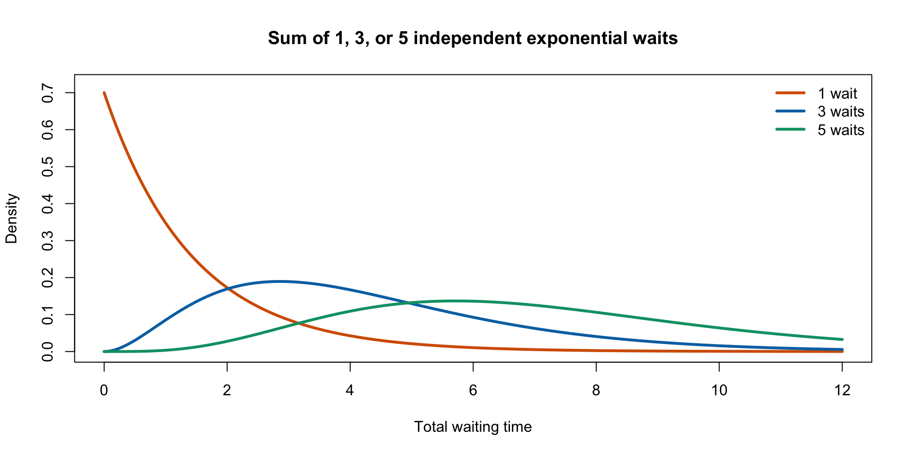
R’s gamma commands
| Task | Gamma distribution |
|---|---|
| PDF height | dgamma(x, shape, rate) |
| CDF | pgamma(x, shape, rate) |
| Quantile | qgamma(p, shape, rate) |
| Simulation | rgamma(n, shape, rate) |
Exercise: simulation versus theory
On every lab from here to the end, you will do something like the following. So let’s practice again:
- Generate and store 1000 draws from Gamma(2, 2);
- Plot a histogram of these;
- Add on top of your histogram a line tracing th density of Gamma(2, 2).
If you did everything correctly, the histogram and density should match.
Solution
Exercises: the campus coffee emergency
A terrifyingly elaborate coffee machine makes your latte in four successive stages: grinding, brewing, steaming, and “artisanal finishing.” Each stage takes an independent \(\operatorname{Exp}(0.5)\) number of minutes.
Let \(T\) be the total time. Then
\[T=W_1+W_2+W_3+W_4\sim\operatorname{Gamma}(4,0.5).\]
Why is the rate 0.5, rather than 2, when each stage takes 2 minutes on average?
Compute:
- \(P(T<5)\): the student might reach lecture on time.
- \(P(T>12)\): time to reconsider one’s life choices.
- \(P(4<T<10)\).
- The 90% quantile of \(T\).
Coffee emergency: picture
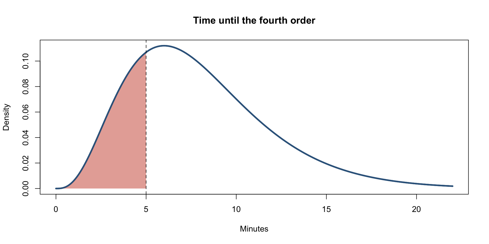
Coffee emergency: solutions
Exercises: haunted house jump scares
A haunted house contains five rooms, each with an independent, exponentially distributed amount of time before a jump scare. In each room, the waiting time has rate 3 per hour. (Management refuses refunds.)
Let \(T\) be the total waiting time across all five rooms, measured in hours.
- Identify the distribution of \(T\), including its parameters.
- Find \(P(T<1)\).
- Find \(P(T>2)\).
- Find the smallest \(t\) such that \(P(T\le t)=0.75\).
- Generate 10,000 observations of \(T\) and estimate \(P(T>2)\) using simulation.
Haunted house: solutions
\(T\sim\operatorname{Gamma}(5,3)\).